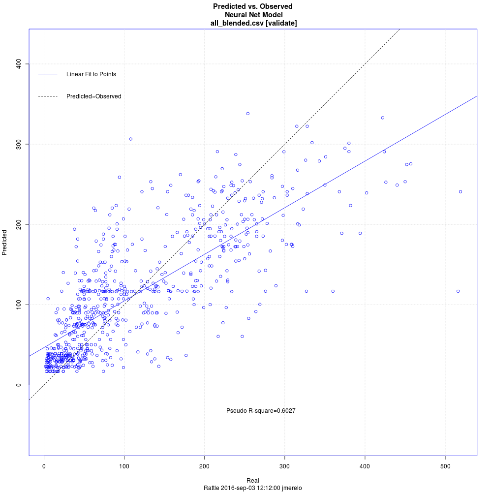

Nowcasting traffic
Fernández-Ares, Mora, Arenas, de las
Cuevas, García-Sanchez, Romero, Rivas,
Castillo, Merelo
University of Granada
It's tough to make predictions, especially about the future.
Yogi Berra, futurist
Predicting the present = nowcasting should be easier
Yoy can't have it both ways
Detecting vehicles via BT or WiFi
Using actual loop + Mobywit data
Open science!
We only have timestamps!
Let's use them
Using hour and day of week
Using rattle to try different methods
Backpropagation neural net: not bad

Conclusions
✓ Nowcasting is possible
✓ Context is essential
✓ The more we detect, the merrier